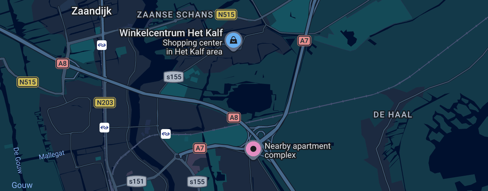

Conversation 829
Zoekopdracht Lokale Activiteiten B&B
Prompt 1 · You
ome dik politie zaanstreek waterland en dea tante de vries het kalf zaandam (gouden kalf Asa Mitz Leandra Marjew pathe) airB&B
Response 1 · Google AI Mode
Het lijkt erop dat u op zoek bent naar een heel specifieke combinatie van lokale elementen, namen en filmlocaties rondom Zaandam en de regio Zaanstreek-Waterland.
Hier zijn de belangrijkste feiten rondom de elementen die u noemt:
- 't Kalf & 't Gouden Kalf (Zaandam): Het Kalf is een bekende wijk en straat in Zaandam. De naam 't Gouden Kalf is in deze regio onder andere gekoppeld aan een lokale kerkgemeenschap in 't Kalf en een historisch geregistreerd adres aan het Kalf 124.
 De Orkaan +1
De Orkaan +1 - Politie Zaanstreek-Waterland: Dit is het officiële politiedistrict waar Zaandam onder valt. "Ome Dik" en "Tante de Vries" lijken te verwijzen naar specifieke lokale personen, personages of een anekdote uit deze buurt.
- Pathé & Gouden Kalf: De term Gouden Kalf is natuurlijk ook de bekendste Nederlandse filmprijs. Hoewel er geen directe bioscoopfilm met de exacte namen "Asa Mitz" of "Leandra Marjew" in de landelijke database van Pathé staat, kan dit verwijzen naar een lokale (amateur)film, een theaterproductie of specifieke personen die betrokken zijn bij een project in de Zaanstreek.
 Wikipedia
Wikipedia
Bedoelt u wellicht een specifieke Airbnb die u zoekt in de buurt van 't Kalf in Zaandam, of probeert u de details van een specifiek (politie)verhaal of filmproject te achterhalen? Laat me weten wat uw precieze doel is, dan help ik u gericht verder!
Source links preserved from this response
- www.deorkaan.nl
https://www.deorkaan.nl/nieuwe-kerk-in-zaandam-t-gouden-kalf/ - geregistreerd adres aan het Kalf 124
https://www.alleadressen.nl/70196/t-gouden-kalf - Pathé
https://www.pathe.nl/nl - nl.wikipedia.org
https://nl.wikipedia.org/wiki/Gouden_Kalf_(filmprijs)
Prompt 2 · You
dat wittige winkelcentrumpje in het kalf zaandam? flats er naast / appartementen
Response 2 · Google AI Mode
Dit is inderdaad een compact, lichtgekleurd buurtwinkelcentrumpje waar onder andere de DekaMarkt en sinds kort een Kruidvat gevestigd zijn.
DekaMarkt +1
Direct boven en naast dit winkelcentrum (en de aangrenzende straten zoals het Hollandsch Diep) staan de kenmerkende appartementencomplexen en flats van de wijk. De appartementen die direct aan het winkelplein grenzen hebben vaak adressen aan de Drielse Wetering zelf.  Funda
Funda
Funda
Shopping Center
Apartments
Bent u op zoek naar een specifiek adres in deze flats, of wilt u weten of er momenteel appartementen te koop of te huur staan rondom de Drielse Wetering? Ik kan gerichte informatie voor u opzoeken!
Source links preserved from this response
- www.dekamarkt.nl
https://www.dekamarkt.nl/actualiteit/nieuwe-dekamarkt-t-kalf-zaandam-geopend - www.funda.nl
https://www.funda.nl/zoeken/koop?selected_area=zaandam/kalf&object_type=apartment - Terms
https://www.google.com/intl/en-NL/help/terms_maps/ - www.facebook.com
https://www.facebook.com/winkelcentrumhetkalf/
Prompt 3 · You
streetview?
Response 3 · Google AI Mode
Hoewel er binnen deze chatomgeving geen rechtstreekse 3D-beelden getoond kunnen worden, kunt u de Street View-locatie van het winkelcentrum en de omliggende flats heel eenvoudig zelf direct openen.
Bekijk de locatie op de kaart:
U kunt direct via de Google Maps-pagina van Winkelcentrum Het Kalf naar de straat navigeren. Google
Google
U kunt direct via de Google Maps-pagina van Winkelcentrum Het Kalf naar de straat navigeren.
Google
- Open de Google Maps-kaart van het winkelplein.
- Zoek rechtsonder in het scherm naar het gele poppetje (Pegman).
- Slepen en neerzetten: Sleep het poppetje naar de Drielse Wetering direct voor het winkelcentrum. SeniorWeb +1
De blauwe lijnen op de kaart lichten op: zodra u het poppetje daar loslaat, staat u virtueel op het plein en kijkt u direct tegen de wittige winkelpanden en de aangrenzende bakstenen en lichte appartementsflats aan.
Wilt u dat ik de looproute of reistijd vanaf een specifieke Airbnb of een ander startpunt in de buurt naar dit winkelcentrum voor u bereken? Laat me gerust weten vanaf welke locatie u wilt vertrekken!
Source links preserved from this response
- support.google.com
https://support.google.com/maps/answer/3093484?hl=nl-NL&co=GENIE.Platform%3DAndroid - www.seniorweb.nl
https://www.seniorweb.nl/artikel/maak-je-huis-onherkenbaar-op-google-maps